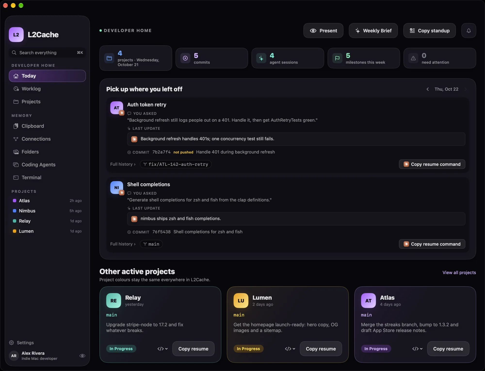
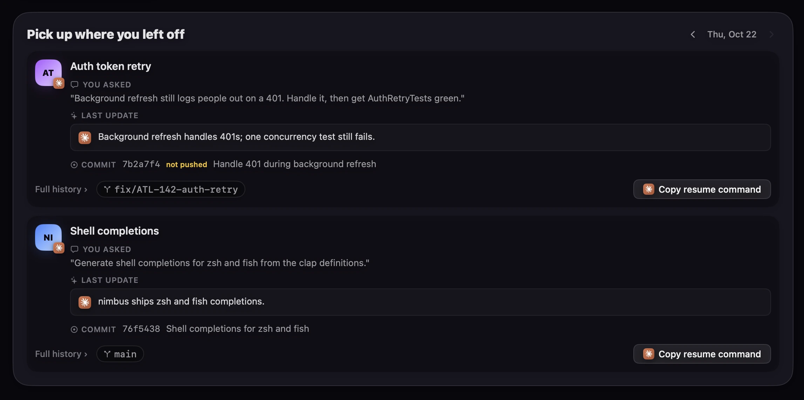
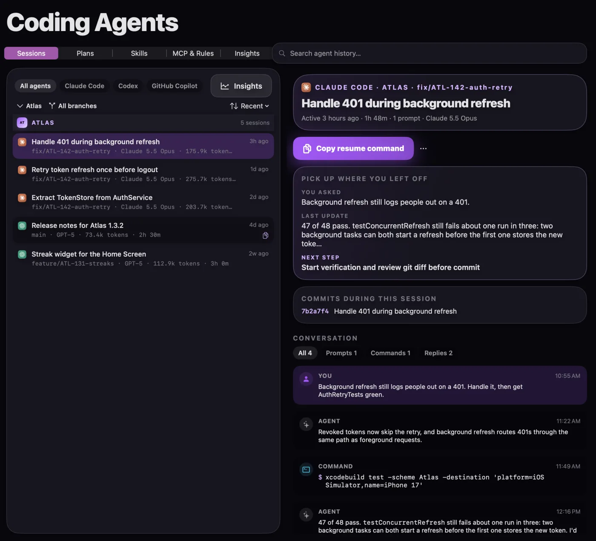
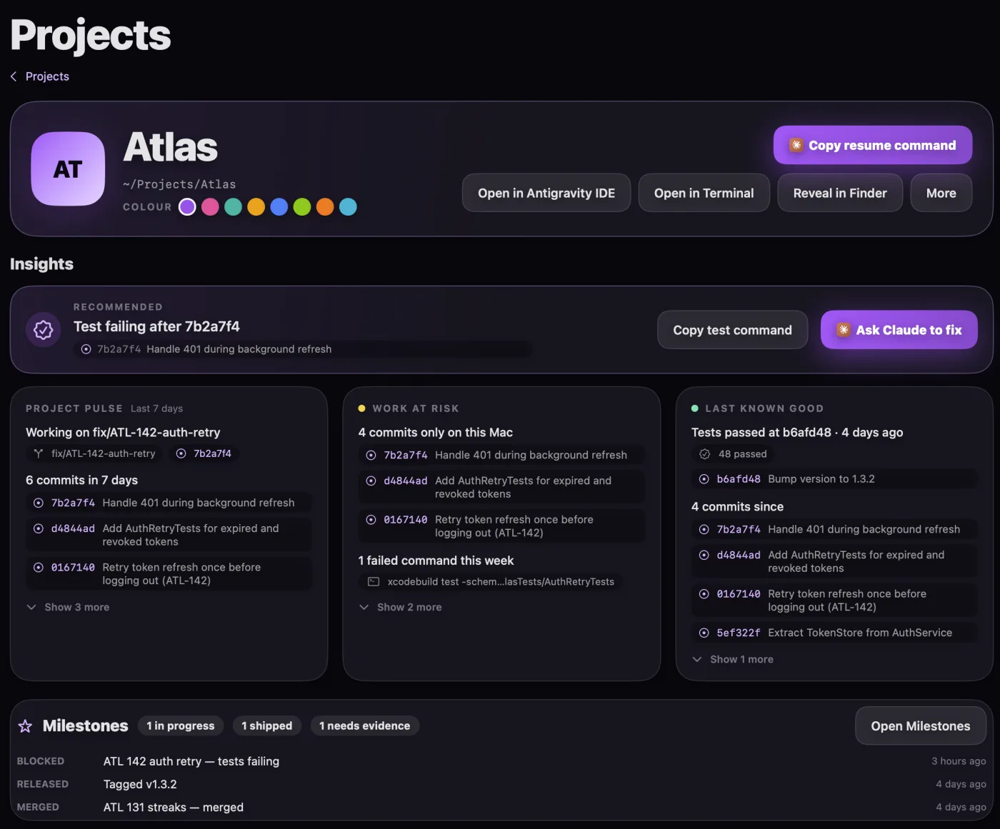
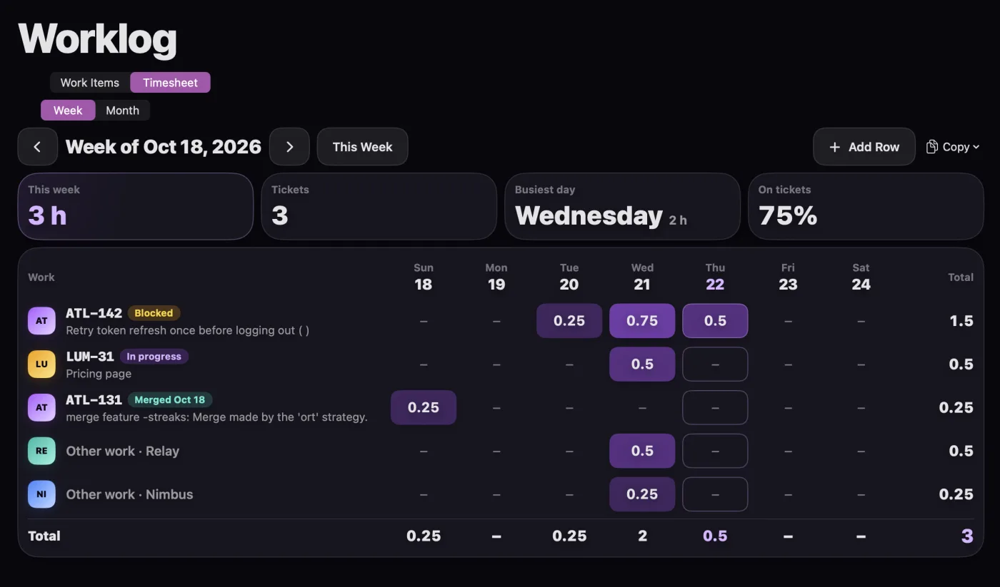
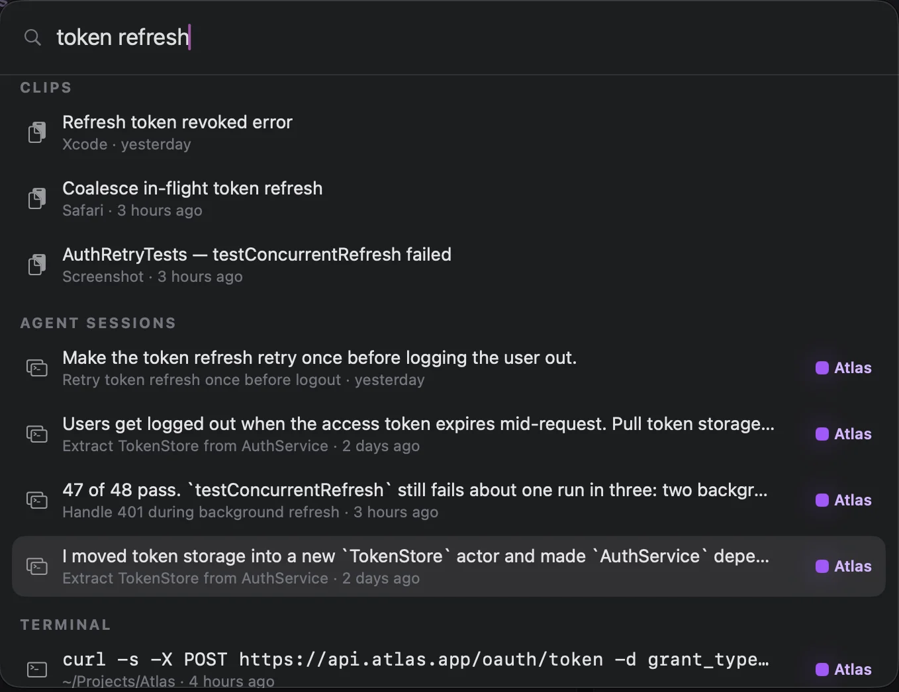
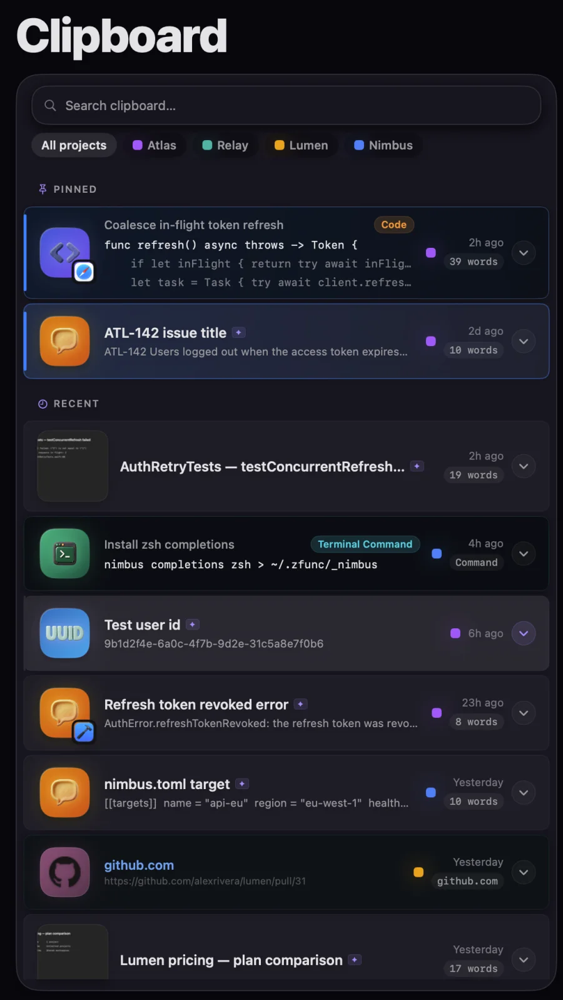
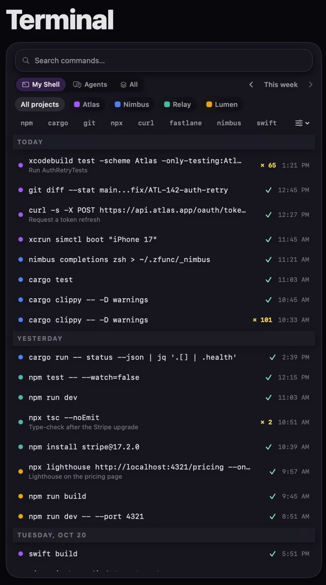

Developer memory for Mac
Pick up where you left off.
L2Cache connects your coding-agent sessions, terminal history, Git activity, screenshots and clipboard, so the thread of your work is waiting when you come back.
Free download · 15-day Pro trial · macOS 13 or later

Built from what's already on your Mac
- Coding-agent sessions
- Terminal history
- Git activity
- Screenshots & folders
- Clipboard
Today
Your morning starts with context, not archaeology.
Open L2Cache and Today shows the last thing you were doing in every project: what you asked your agent, what it finished, and the one step that comes next.
- You were working on. The goal of your last agent session, in your own words.
- Last update. What the agent reported before you stopped.
- Resume. Reopen the session in the agent you were using, in one click.
- Needs attention. Failed runs, unpushed commits and branches pushed but never merged.

Coding agents
Your coding agents finally have a history.
Every agent keeps its sessions in a different place and format. L2Cache reads them from your Mac and lays them out by project and branch, so a conversation from last Tuesday is a search away.
Session history from
- Claude Code
- Codex
- GitHub Copilot
- Grok Build
- Google Antigravity
- Resume. Copy or run the resume command for a supported session. The agent's CLI and the original session need to be available.
- Handoff. Live capture and session handoff for Claude Code, Codex, GitHub Copilot and Grok Build.
- Plans and skills. Browse plans from Claude Code and Antigravity, and installed skills and their use from Claude Code and Codex.
Available details and live-continuity features vary by agent.

Projects & Worklog
Every project keeps its story.
Commits, branches, agent sessions, test runs and releases line up on one timeline per project, so you can see how the work got here, not just where it is.
- Project Story. A commit graph and timeline read straight from
.git. L2Cache never runs Git for you. - Milestones. Each piece of evidence is labelled Git verified, Test verified, You noted, or L2Cache inferred.
- Worklog. Tickets you worked on and approximate hours per day, which you can correct and copy into your timesheet tool.
- Weekly Brief & standup. An editable standup built from your recorded activity.


Search
Find the thread with ⌘K.
One search across your projects, agent sessions, terminal history, Git activity, screenshots and clipboard. The command you ran, the error you copied and the screenshot you took are in the same place.
- Every source at once. Clips, agent sessions, terminal commands, commits and docs in one list.
- Screenshot search. Find a screenshot by the text inside it.
- Quick panel. ⌥Space brings up your history from any app.

Clipboard & Terminal
Everything you copied and ran, by project.
Your clipboard and shell history stop being one long list. Each clip and command lands in the project it came from, so the snippet from this morning is next to the work it was for.
- Smart clipboard. Clips are recognised as code, JSON, SQL, URLs, colours and more, with actions for each type. Pin the ones you reuse.
- Terminal history. Every command with its exit code, grouped by day and filterable by project or tool.
- Your shell and your agents. See the commands you ran, the ones your coding agents ran, or both.


Privacy
Local-first, with honest boundaries.
Your history lives in L2Cache's database on your Mac. Here is exactly where the line sits.
On your Mac
- History databaseSessions, commands, Git activity, clips and screenshots
- Apple IntelligenceOn-device, where your Mac supports it
- OllamaA local model you run yourself
- Rule-basedWorks with no AI provider at all
Only if you turn them on
- Optional servicesSuch as cloud AI providers you choose to connect
- You choose what's captured. Exclude apps and pick the folders L2Cache indexes.
- Presentation mode. Masks project names, paths, prompts and commands when you share your screen.
- Read, don't run. L2Cache reads your
.gitfiles and agent logs. It doesn't run Git or your agents to do it.
Try everything for 15 days.
- Free download
- 15-day Pro trial
- One-time Pro unlock, no subscription
Requires macOS 13 or later.
Questions
What is L2Cache?
L2Cache is developer memory for Mac. It connects your projects, coding-agent sessions, terminal history, Git activity, screenshots and clipboard content, so when you come back to your Mac you can see where you left off and resume the work.
Is L2Cache a clipboard manager?
It includes one. L2Cache started as a clipboard manager and still has searchable clipboard history with smart actions, opened with the ⌥Space quick panel. Version 2.0 adds the Developer Home, which brings clipboard, terminal, Git and coding-agent history together by project.
Which coding agents does L2Cache read history from?
L2Cache reads local session history from Claude Code, Codex, GitHub Copilot, Grok Build and Google Antigravity. Available details and live-continuity features vary by agent.
Can I resume a Claude Code or Codex session from L2Cache?
Yes. L2Cache generates the resume command for supported sessions and can open it in your terminal. The agent's command-line tool and the original session must still be installed and available on your Mac.
Where is my history stored?
Your history is stored locally in L2Cache's database on your Mac. On-device Apple Intelligence (where available), a local Ollama model, or rule-based processing can be used without a cloud service. Optional services you choose to enable, such as cloud AI providers, sit outside that boundary.
How much does L2Cache cost?
L2Cache is a free download from the Mac App Store with a 15-day Pro trial. Pro is a one-time unlock with no subscription.